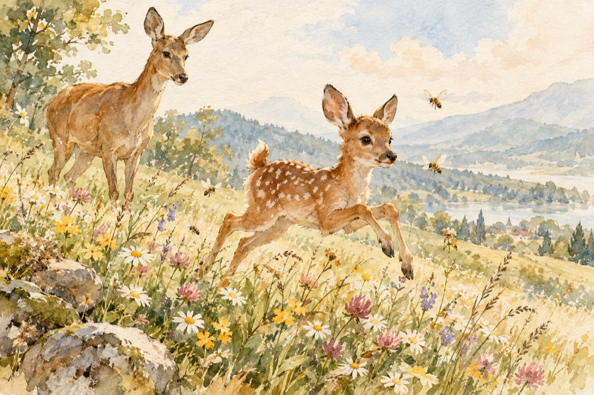

Căprioara și-o albină
Căprioara și-o albină
S-au întâlnit pe imaș
Cu-al ei puișor gingaș
Ce se tăvălea prin flori
Pierzându-se în culori
Și alerga behăind
Pe imașul înflorit.
Albina era-ncărcată
Cu nectar cules din flori
De ied fiind deranjată
Bâzâi de patru ori
Și din cele patru zări
Apărură patru nori
Cu albine luptătoare
Pe dușmani să îi doboare
Dar văzând frumosul ied
Cum flutura din codiță
Au pornit-o- ntr-un balet
În cea dalbă poieniță.
Bâz, bâz, bâz și be, he, he,
Porniți pe întrecere
Iedul și albinele
În cea mândră poieniță
El dând mereu din cosiță
Iar ele din aripioare
Alergând, zburdând, prin soare
Căprioara stând de veghe
Cu albina în pereche
Aveau bucurie mare
Că-n poiană-i sărbătoare!...
Vasile Groza